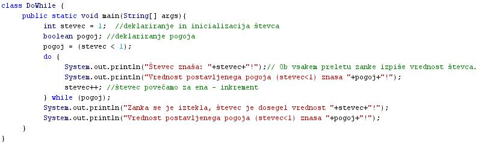
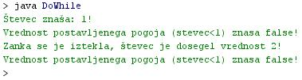

ZANKA DO-WHILE
- Zanka "do-while" tudi ponavlja stavek ali blok stavkov, ki jih vsebuje. V tem se prav niè ne razlikuje od zanke "while".
- Razlika med zanko "do-while" in zanko "while" je v položaju postavljenega pogoja v zanki.
- Pri zanki "do-while" je pogoj postavljen na koncu zanke.
- Pri zanki "while" je pogoj postavljen na zaèetku zanke.
- Ta razlika v mestu postavitve pogoja povzroèi bistveno razliko v delovanju zanke "do-while".
- Ker je pogoj pri zanki "do-while" postavljen na koncu zanke, se stavek ali blok stavkov, ki jih ta zanka vsebuje, izvede v vsakem primeru vsaj enkrat.
- Tudi èe postavljeni pogoj nikoli ni izpolnjen, se zanka izvede vsaj enkrat, saj preveri stanje pogoja šele na koncu preleta skozi zanko.
- Primer:
do {
stavek1;
stavek2;
stavek3;
stavek4;
} while (pogoj);
-
VAJA 23:
- V okolju za pisanje izvorne kode v jeziku Java, za prevajanje in za interaktivno delo zapiši zgornji program "DoWhile". Pomagaj si s sliko.
- Kodo lahko tudi kopiraš iz te datoteke in jo prilepiš v okolje, v katerem pišeš programèke. Pozor: koda, ki jo boš kopiral/a, vsebuje eno, dve, tri ali štiri napake. Èe želiš, da bo program deloval, moraš napake odkriti in jih odpraviti.
- Izvorno kodo shrani pod imenom "ImePriimek23.java". ImePriimek je seveda tvoje lastno ime in priimek.
- Datoteko "ImePriimek23.java" prevedi.
- Prevedeno datoteko zaženi, preveri rezultat v interaktivnem oknu in poklièi profesorja, da vidi rezultat.
1. Vprašanja:
1. Kakšna je bistvena razlika med zanko "while" in zanko "do-while", èe primerjaš njuno zgradbo?
2. Kakšna je bistvena razlika med zanko "while" in zanko "do-while", èe primerjaš njuno delovanje?
3. Koliko stavkov vsebuje zanka "do-while" v vaji te uène enote?
4. Koliko stavkov še sledi zanki "do-while" v vaji te uène enote?
5. Zapiši pogoj v zanki "do-while" v vaji te uène enote.
6. Kolikokrat se zanka "do-while" v vaji te uène enote izvede?
7. Kolikšna je bila vrednost postavljenega pogoja ob prvem izvajanju zanke v vaji te uène enote?
8. Zakaj se je izvajanje zanke v vaji te uène enote zakljuèilo?
9. Zapiši stavek, ki se je izvedel v vaji te uène enote takoj po zakljuèku izvajanja zanke "do-while".
10. Kako ja zapisan pogoj v zanki "while" v vaji te uène enote, kot izraz ali kot spremenljivka?
2. Zapiši od ene do pet kljuènih besed, ki povzemajo vsebino te uène enote.
3. Povezave do dodatnih informacij.
Gradiva na spletnih straneh fakultete za matematiko in fiziko v Ljubljani.
Spletni priroènik proizvajalca programskega okolja Java. To je podjetje Sun.
|